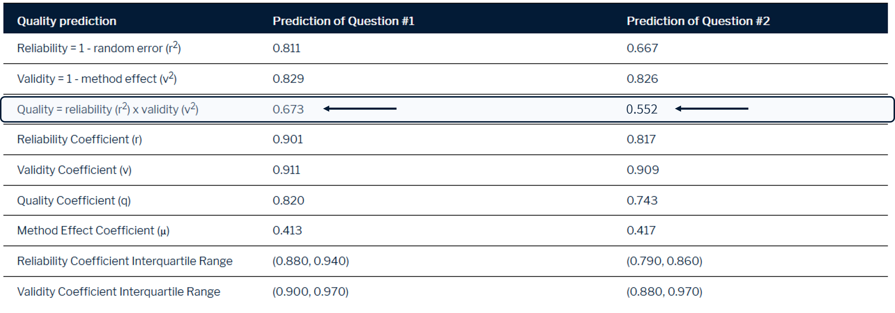

Survey Quality Predictor: SQP
Introduction
The Survey Quality Predictor (SQP) 3.0 is an open-access system for predicting the reliability, validity and quality of survey questions based on their formal and linguistic characteristics. SQP is grounded in decades of methodological research and enables survey designers and researchers to evaluate and enhance the quality of their measurement instruments. By systematically linking the formal and linguistic characteristics of survey items to their measurement quality, SQP provides a practical framework for improving data quality in survey-based research (Felderer et al., 2024).
SQP 3.0 offers a strong prediction power with a day-by-day extending broad database. Researchers can effectively utilize its features in at least three different ways (Felderer et al., 2024):
- During the questionnaire development process, researchers can consult the database, predict the qualities of different item versions, and make informed comparisons.
- SQP enables researchers to compare different language versions by analyzing the coded characteristics. This analysis helps identify potential methodological differences between the source items and their translations, thus supporting quality control of translations in cross-cultural surveys.
- SQP’s quality predictions can play a crucial role in correcting measurement errors for items capturing subjective concepts (Andrews, 1984; Saris et al., 2022; Saris & Revilla, 2016).
In this tutorial, we will explain the conceptual framework of SQP, demonstrate its function through an example and conclude with a discussion on its benefits, limitations, and potential for future development. Overall, this tutorial aims to ensure that survey designers and researchers can harness SQP 3.0 to create better surveys, mitigate potential biases, and enhance the overall quality of their research.
SQP
The Survey Quality Predictor (SQP) is a cutting-edge software tool developed to predict the measurement quality of survey items for continuous latent variables. It operates by analyzing survey items’ formal, linguistic, and contextual characteristics (GESIS – Leibniz Institute for the Social Sciences, 2024). SQP’s development is rooted in decades of methodological research, beginning in the 1980s when Willem Saris and his colleagues conducted a series of multitrait-multimethod (MTMM) experiments. These experiments aimed to quantify the reliability and validity of survey items and disentangle random and systematic errors, ultimately improving the quality of survey instruments (Saris & Gallhofer, 2014). The insights from these early experiments laid the foundation for SQP’s predictive capabilities.
The first version of SQP was released in 2001. This version operationalized the findings from MTMM research into a practical tool that allowed users to code survey items and predict their reliability and validity. While groundbreaking, SQP 1.0 had limitations, such as a relatively small database that the prediction was based on and a lack of advanced error correction features (GESIS – Leibniz Institute for the Social Sciences, 2024). A decade later, SQP 2.0 introduced significant advancements, including an expanded database and improved user interface, enabling researchers to conduct more nuanced analyses. In 2015, SQP 2.1 further refined these capabilities by supporting cross-national surveys and enhancing the coding scheme to handle complex items(Saris et al., 2022). The release of SQP 3.0 in 2022 marked a major milestone in survey research methodology. This version included thousands of survey items coded in over 30 languages, making it particularly valuable for cross-cultural and multilingual studies like the European Social Survey (ESS). Its updated prediction algorithm accounted for interactions between item characteristics, offering more accurate reliability and validity estimates. SQP 3.0 also introduced features for identifying and correcting measurement errors, allowing researchers to adjust observed data for biases, especially in items measuring subjective concepts like attitudes or satisfaction (GESIS – Leibniz Institute for the Social Sciences, 2024).
SQP has evolved into a comprehensive tool that supports survey researchers in designing high-quality questionnaires, ensuring cross-cultural comparability, and improving the reliability of survey data. Its integration of predictive modeling, advanced error correction, and user-friendly features positions SQP as an indispensable resource in modern survey research.
The Impact of Survey Question Design and the Role of SQP
Survey question design significantly impacts respondents’ answers, as variations in question formulation, response scales, and contextual features influence how individuals interpret and respond to survey items. For instance, Saris et al. (2022) illustrate this with an example of measuring trust in the economy. They compare the effects of three different response scale designs on the question:
(Q1) On the whole, how satisfied are you with the present state of the economy in Britain?
4-point bipolar scale:
- Very satisfied
- Satisfied
- Dissatisfied
- Very dissatisfied
4-point unipolar scale:
- Not at all satisfied
- Satisfied
- Rather satisfied
- Very satisfied
Numeric Scale (0–10):
Very dissatisfied Very satisfied 0 1 2 3 4 5 6 7 8 9 10
The results revealed significant differences in response distributions and correlations with related variables based on the scale used. For instance, numeric scales tended to produce higher correlations with other trust measures, whereas bipolar and unipolar scales generated distinct response patterns. These variations stem from the way survey questions influence respondents’ cognitive processing. Bipolar scales emphasize contrasts between extremes, potentially encouraging more polarized responses, while unipolar scales direct attention to a single dimension, which may reduce polarization but introduce other biases. Numeric scales, on the other hand, convey a sense of precision and neutrality, yet require respondents to map their attitudes onto a numeric continuum. These subtle but impactful differences highlight the critical role of thoughtful survey design, especially for subjective constructs like trust or satisfaction (Saris et al., 2022).
Therefore, SQP is essential for ensuring high-quality survey research, as it systematically addresses the impact of question design on measurement outcomes. By predicting the reliability and validity of survey questions, SQP helps researchers identify potential biases and unintended effects introduced by variations in scales, wording, or structure. For example, as demonstrated with differences between numeric, bipolar, and unipolar scales, small design changes can profoundly influence respondents’ cognitive processing and, consequently, the data collected. This is particularly critical for subjective measures like trust, satisfaction, or attitudes, where nuanced design decisions can significantly affect data quality and the validity of subsequent analyses.
Introduction to the Coding Process in SQP
SQP Website provides researchers with a comprehensive tool to systematically evaluate and enhance the quality of survey questions. At the heart of this process lies the coding of survey items, where specific characteristics of questions are analyzed to generate predictions about their reliability and validity. The SQP website offers an intuitive interface that facilitates both the coding process and access to its extensive database of survey items.
To begin using SQP, researchers must first register and create an account on the platform. After confirming their email, they can log in to access the full functionality of the tool. Once inside, users are greeted with a searchable database containing a vast collection of survey items from various studies, languages, and countries. The database allows researchers to explore existing items, apply filters, and use advanced search options to focus on specific topics or coding characteristics. For instance, users interested in survey items coded for “centrality” or measuring concepts like “political efficacy” can refine their search accordingly.
The platform also enables researchers to contribute new survey items by entering key details, such as the question text, response options, and metadata about the study. After adding an item, users proceed to the coding stage, where they analyze the survey question’s characteristics in detail. This process involves evaluating features like the response scale, linguistic complexity, and the formulation of the request for an answer. Although coding between 30 and 60 characteristics may seem daunting initially, the platform provides clear instructions and contextual help to guide users through the process.
Once the coding is complete, SQP generates a prediction of the item’s measurement quality, including its reliability, validity, and potential method effects. These predictions are accompanied by detailed explanations, offering researchers actionable insights to refine their survey items. Furthermore, the platform includes tools to compare codings across different survey items or variations of the same item, highlighting how design choices can influence measurement quality.
SQP also supports transparency and replicability by enabling users to document their coding decisions and replicate survey items for use in other studies. These features are particularly beneficial for longitudinal or comparative research, where consistent question design is critical.
For a detailed explanation of the coding process and additional resources, the full SQP guideline is available here: SQP Manual.
For a detailed explanation of the coding process and additional resources, the full SQP guideline is available here: SQP Manual.
| Variable Name | Description |
|---|---|
| Domain | The topic of the assertion that one wants to measure using this survey item, determined by the research goal. |
| Concept | The concept one wants to measure, classified as one of the basic concepts distinguished in SQP. |
| Social desirability | Relates to the domain choice; identifies sensitive or delicate items that can bias responses. |
| Centrality | Measures the familiarity of respondents with the topic, linked to the domain choice. |
| Reference period | Refers to the time period mentioned in the request, e.g., present, past, or future. |
| Formulation of the request | The basic formulation of the request, e.g., direct, indirect, or omitted in item batteries. |
| WH word used in the request | Requests starting with words like who, what, when, where, how, etc., or their translations. |
| Request for an answer type | Requests may be formulated as interrogative, imperative, or declarative. |
| Use of gradation | Identifies requests where responses can be ordered, e.g., low to high or vice versa. |
| Balance of the request | Determines whether requests are balanced (mentioning both poles) or unbalanced. |
| Presence of encouragement | Encourages responses, e.g., ‘Please, tell me…’ or ‘We would like to ask you…’ |
| Emphasis on subjective opinion | Focuses on subjective opinion, e.g., ‘What do you think about…?’ or ‘According to you…’ |
| Information regarding others’ opinions | Includes information on others’ opinions, e.g., ‘Some people are against nuclear energy while others support it.’ |
| Use of stimulus or statement | Survey items with a stimulus (noun/words) or statements (complete sentences). |
| Absolute or comparative judgment | Determines whether respondents provide absolute or comparative judgments. |
| Response scale: basic choice | The type of response options, e.g., two-category, more-step procedures, open-ended, etc. |
| Response scale characteristics | Characteristics like number of categories, maximum values, labels, and scale range. |
| Don’t know option | Indicates whether a ‘Don’t know’ option is present. |
| Interviewer instruction | Instructions provided to interviewers, e.g., about showcards or visual aids. |
| Respondent instruction | Instructions provided to respondents, usually in imperative or polite forms. |
| Extra information or definition | Additional information or definitions provided for clarity, though not strictly necessary. |
| Knowledge provided | Defines whether definitions, explanations, or both are provided. |
| Introduction available | Introduces the survey topic or related questions, often at the beginning. |
| Linguistic characteristics | Covers linguistic features of introduction, request, and answer scale, e.g., number of sentences, words, or abstract nouns. |
| Showcard used | Indicates whether a showcard is used for response options or additional assistance. |
| Showcard characteristics | Details characteristics of showcards, e.g., scale orientation, labels, or numbers. |
| Computer-assisted | Indicates whether the mode of data collection is computer-assisted. |
| Interviewer | Specifies whether the mode is interviewer-administered or self-administered. |
| Visual or oral presentation | States whether the questionnaire is visually presented or orally read to respondents. |
| Position | Indicates the position of the survey item within the questionnaire. |
Practical Application of SQP
To illustrate how measuring the same construct can vary depending on the type of question and the answer scale used—and how these variations can lead to different quality prediction scores—we examine a question from the fourth round of the European Social Survey (ESS) regarding economic satisfaction. In the first example, the construct is measured in the United Kingdom using a numeric rating scale that ranges from “0 - Dissatisfied” to “10 - Satisfied.” The question asks, “On the whole, how satisfied are you with the present state of the economy in (Britain/the UK)?” This scale captures various degrees of satisfaction along a continuum, providing respondents with a range of options to express their attitudes. In the second example, the same construct is measured in the UK using a 5-point Likert scale with fully labeled response options. The question states, “To what extent do you agree or disagree with the following statement: On the whole, I am satisfied with the present state of the economy in (Britain/the UK).” Here, response options range from “1 - Agree strongly” to “5 - Disagree strongly,” categorizing responses into distinct levels of agreement or disagreement.
 Using SQP, both survey items were coded to capture their design characteristics, revealing notable differences. Shared attributes included the domain, classified as “National Politics,” and the concept of “Feeling,” specifically focusing on satisfaction with the economy. However, variations emerged in other areas. The numeric scale question was coded as using a symmetric, theoretically bipolar scale with partially labeled categories, emphasizing both extremes and intermediate values. In contrast, the Likert scale question was coded as having fully labeled categories, a balanced structure, and an indirect request format. Additional differences included the presence of encouragement to respond in the Likert scale example, which was absent in the numeric scale question. These distinctions, highlighted in the coding interface, reflect design nuances that can influence respondents’ interpretations and responses.
Using SQP, both survey items were coded to capture their design characteristics, revealing notable differences. Shared attributes included the domain, classified as “National Politics,” and the concept of “Feeling,” specifically focusing on satisfaction with the economy. However, variations emerged in other areas. The numeric scale question was coded as using a symmetric, theoretically bipolar scale with partially labeled categories, emphasizing both extremes and intermediate values. In contrast, the Likert scale question was coded as having fully labeled categories, a balanced structure, and an indirect request format. Additional differences included the presence of encouragement to respond in the Likert scale example, which was absent in the numeric scale question. These distinctions, highlighted in the coding interface, reflect design nuances that can influence respondents’ interpretations and responses.
 SQP generated quality predictions for both types of questions, highlighting the impact of various design choices. The numeric rating scale question achieved a reliability score of 0.811 and a validity score of 0.829, resulting in an overall quality score of 0.673. In contrast, the Likert scale question received a reliability score of 0.667 but a slightly higher validity score of 0.826, yielding an overall quality score of 0.826. These results emphasize that the use of fully labeled response categories and well-balanced design elements in the Likert scale contributes to its higher overall quality score in measuring this specific construct. Ultimately, these differences illustrate the importance of aligning question design with research objectives to optimize data quality.
Conclusion
The Survey Quality Predictor (SQP) is a powerful tool for improving survey research by enabling a systematic evaluation of question design. It can predict the reliability, validity, and quality of survey items based on their formal and linguistic characteristics. This capability is invaluable for researchers looking to enhance their measurement instruments. By linking these characteristics to measurement quality, the SQP provides actionable insights for creating better surveys, supports quality control in research, and helps reduce potential biases when measuring subjective concepts such as attitudes and satisfaction.
Despite its advantages, SQP has some limitations. Its dependence on user coding can introduce subjectivity in interpreting the characteristics of survey questions. While the platform provides authorized codings for numerous surveys and offers detailed guidance to minimize this risk, the quality of predictions can still vary depending on the user’s expertise. Additionally, the coding process—which requires assessing up to 60 characteristics for each item—can be time-consuming for those unfamiliar with the tool. Furthermore, although SQP’s database is extensive, it is not exhaustive, and the quality of predictions may not fully capture the nuances of all survey contexts or emerging methodologies.
Looking ahead, the potential for SQP’s development is promising. Expanding the database to include a wider variety of languages, regions, and survey designs would enhance its applicability, particularly in underrepresented contexts. Incorporating machine learning algorithms to automate parts of the coding process could alleviate the cognitive load on users and improve consistency. Additionally, integrating SQP with newer survey methodologies and adaptive designs, along with continuously updating its algorithms to reflect advancements in survey research, will help maintain its relevance in a rapidly evolving field. By addressing these challenges and embracing innovation, SQP can continue to be an indispensable tool for survey researchers around the world.